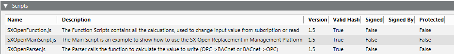
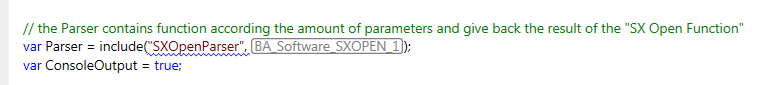
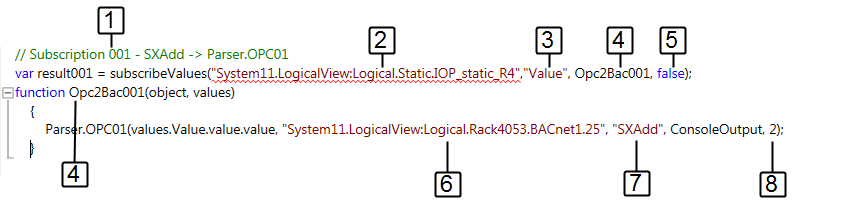
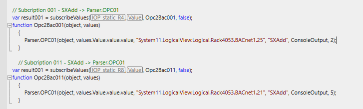
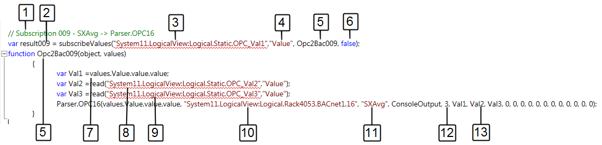

Creating Scripts
For general information on how to create a script, see Step-by-step > Configuring a Project > Configuration Workflows & Procedures > Configuring Scripts.
Copy an Example from the Library
- The Scripts extension module is installed.
- Two virtual data points are created for calculated values (for example: Average of two OPC data points). Refer to the Virtual Objects description for additional information.
- In System Browser, select Management View.
- Select Project > System Settings > Libraries > L1-Headquarters > BA > Software > Desigo Gateway Functionality Scripts > Scripts.
- Select the Script Editor tab.
- The example scripts SXOpenMainScript, SXOpenFunction, SXOpenParser are displayed.

- Select the SXOpenMainScript.
- Open the Viewer expander.
- Select the Script Editor tab.
- Press CTRL+A to highlight all the content and CTRL+C to copy it.
Creating and Saving a Script
- A new folder is created to save the Gateway Script.
- In System Browser, select Application View.
- Select Applications > Logics > Scripts.
- Select the Script Editor tab.
- Open the Editor expander.
- Delete the default entries.
- Press CTRL+V to paste content.
- Click Save As
 .
. - In the Save object as dialog box, enter the name and description.
- Click OK.
When Does the Script Path Need to be Changed
The script path must be changed if the Scripts SXOpenFunction and SXOpenParser are modified for a project. The variable ConsoleOutput=true displays the results in the Console expander.

Apply SXAdd Function with COV
The examples in the library were created for the communications from OPC to BACnet. The value (3) in Present_Value must be changed for communications from BACnet to OPC.

- The OPC and BACnet data points are imported.
- The script is opened in System Manager in the Editor expander.
- In System Browser, select logical view.
- In the Editor expander, select the predefined function SXAvg and copy the template to the script.
Data Points Configuration
- Enter a unique subscription number (1) as a description.
- Drag the OPC data point from System Manager to the first subscription (2).
- (Optional) Another property can be defined instead of the default property Value (3).
- Enter the function using the corresponding description number (4). This number must be unique throughout the script. The Script editor does not check the numbers for uniqueness.
- Do not change the entry false (5).
- Drag the BACnet data point from System Manager to the first subscription (6).
NOTE: A virtual data point can be assigned instead of a BACnet data point. - Enter the calculation function (7) SXAdd.
- Enter an offset (8) to the data point value.
Editing Additional Data Points
- Create another SXAdd subscription or select a new script function.

- Repeat the steps as described in Data Points Configuration.
- Delete unneeded functions from the script.
Applying SXAvg Function with COV
The description is based on three OPC data points.

- The preconditions are described in SXAdd.
- In the Editor expander, select the predefined function SXAvg and copy the template to the script.
- Enter a unique subscription number (1) as a description.
- Enter a unique function number (2).
- Drag the OPC data point from System Manager to the first subscription (3).
- (Optional) Another property can be defined instead of the default property Value (4).
- Enter the function using the corresponding description number (5). This number must be unique throughout the script. The Script editor does not check the numbers for uniqueness.
- Do not change the entry false (6).
- In variable 1, enter the parameter (7) for the subscription data point (3).
- Drag the OPC data point from System Manager to the second variable (8).
- Drag the OPC data point from System Manager to the third variable (9).
- Drag the BACnet data point from System Manager to the first subscription (10).
NOTE: A virtual data point can be assigned instead of a BACnet data point. - Enter the calculation function (11) SXAvg.
- Enter the number (12) of data point values for calculation.
- The number of assigned data point variables (13) must match the numbers of variables (12). The remaining variable must be set to 0.

NOTE:
The average is only calculated if the value of the first subscription changes. Use the polling function to perform continuous averaging.
Applying the SXBetween Function with Polling
The examples in the library were created for communications from OPC to BACnet. The value (4) in Present_Value must be changed for communications from BACnet to OPC.
- The preconditions are described in SXAdd.
- In the Editor expander, select the predefined function SXBetween and copy the template to the script.
- Enter a unique function name (1) as a description. The function name must be unique throughout the script.
- Enter the polling rate (2) in milliseconds. All data points assigned to this function are polled at the same polling rate.
- Drag the OPC data point from System Manager to the first read line (3).
- (Optional) Another property can be defined instead of the default property Value (4).
- Drag the BACnet data point from System Manager to the first read line (5).
- Enter the calculation function (6) SXBetween.
- Enter the minimum and maximum limit value (7) of the data point value for calculation.
- Create additional data points (lines 2 to 4) in this function or create a new function with a different polling rate.